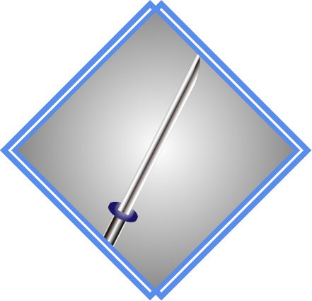
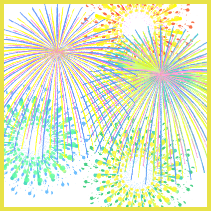
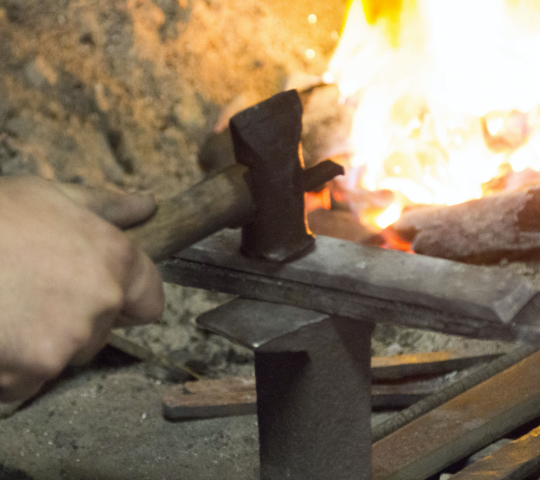

For your experience.
Explanation of purpose
We are thinking of productization Japanese culture you want to experience. Therefore, we have listed some candidates this time. It is composed on a story basis, and products are introduced according to each story. If you have a product with the experience you want, please share it on the support button and SNS.
We will consider commercialization by analyzing those reactions.
Thank you!
Cherry Blossom Festival - 桜祭り -
#nostalgia japan experience #sakua festival #sakuraproduct
The cherry blossom festival is said to have started among Japanese aristocrats around the 8th century.
It is famous that Japan donated cherry trees to the United States in 1912, but it has also been donated to many other countries.
Cherry blossom festivals are now being held all over the world.
But what was the original Sakura Festival like?
Take a look at the Nostalgia story of
the Sakura Festival.
Samurai - 侍 -
#nostalgia japan experience #sakua festival #aaaa

A
samurai is a profession that is good at martial arts, has a sword, and serves the daimyo “monarch”.
The word “samurai” originally meant “serving the monarch.”
Bushido and military research are indispensable for samurai, and from the idea of “bushido”, there was the idea of absolute obedience to the Lord and saving the life of the Lord.
When was the samurai born in Japanese history?
Take a look at the Nostalgia story
of the Samurai.
Fireworks - 花火 -
#nostalgia japan experience #sakua festival #aaaa
P
eople from overseas sometimes say that Japanese fireworks are very beautiful.
However, in Japan, fireworks technology and fireworks festivals have been held since modern times.
Let’s see when the culture of watching fireworks was born in Japan.
Take a look at the Nostalgia story
of the Fireworks.

Current status of the traditional craft industry

We have many designs with unique beauty, and high quality traditional crafts In our country Japan.
However, highly skilled craftsmen are aging and the workshop is closed or there skills is not inherited.
Young people also feel a sense of crisis in Japan.
There are many people who want to become craftsmen, but young people’s craftsmen are not getting enough wages because they are pushed by cheap mass-produced products and cannot sell well.
Significance of you buying these
Therefore, the goal is for young craftsmen to earn enough income to live with pride as craftsmen, and to pass on wonderful skills from skilled craftsmen to young people.